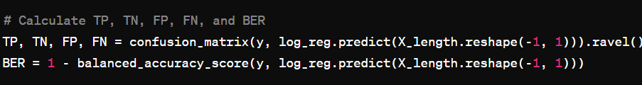

Recommendation Engine
An Insightful Overview and Core Principles Underpinning My Code Implementation
-
The Problem
The issue is divided into two main parts: regression and classification, using datasets from XYZ Random Reviews and Alcholo Reviews, respectively. I was tasked with developing predictive models to analyze how different features—such as review length and temporal aspects for the book reviews, and review characteristics for the Alcholo Reviews—affect user ratings. The regression tasks focus on predicting star ratings based on review length and time of review, requiring students to train models, scale features appropriately, and employ techniques like one-hot encoding to improve their predictions. For the classification part, the challenge lies in predicting whether a beer review is positive or negative, with an emphasis on adjusting for class imbalance, calculating precision at various levels, and enhancing the model's performance by incorporating additional data features. This comprehensive assignment not only tested my abilities to apply regression and classification techniques but also encouraged innovation in feature engineering and model evaluation to derive meaningful insights from real-world data.
The Approach
Regression Tasks
Predicting Star Ratings from Review Length
I started by training a simple linear regression model to predict star ratings based on the length of the review. To ensure the feature was appropriately scaled between 0 and 1, I divided the length of each review by the maximum review length found in the dataset. This normalization step helps in improving the model's performance by keeping feature values within a comparable range.
The model coefficients, intercept and slope, along with the mean squared error (MSE) of the model on the entire dataset, were calculated to evaluate the model's performance. These metrics provide insights into the model's accuracy and how well it generalizes across the dataset.
Model Extension with Temporal Features
To enhance the model, I incorporated additional features based on the time of the review, using one-hot encoding for the weekday and month. This approach aims to capture any temporal patterns in the ratings, which might be influenced by factors such as seasonal trends or specific days of the week.
For the one-hot encoding, I carefully excluded redundant dimensions, ensuring the feature vector contained no more than 19 dimensions, including the offset term and the length feature. Feature vectors for the first two examples were provided to demonstrate the encoding process.
Model Training with Direct and One-hot Encoding Features
Two models were trained: one using the weekday and month values directly as features and another utilizing the one-hot encoding strategy from the previous question. This comparative analysis aimed to assess the impact of feature representation on model performance, with the MSE of each model reported to highlight differences.
Evaluation on Training and Test Sets
By splitting the data into 50% training and 50% test sets, I further evaluated the models' robustness and generalizability. After training on the training set, I reported the MSE of both models (one-hot encoding and direct encoding) on the test set, providing a clear comparison of their predictive capabilities on unseen data.
Code Overview
Scaling review lengths and predicting ratings with linear regression.
Enhancing the model with one-hot encoded temporal features.
Comparing models using direct and one-hot encoded features based on MSE.
Evaluating model performance on unseen test data.
Classification Tasks
Using Previous Logistic Regression
Utilizing the beer review dataset, I constructed a label vector to classify reviews as positive or negative based on whether the review score was four or above. A logistic regression model was then fitted to estimate the probability of a rating being positive from the review length, with the class_weight='balanced' option used to address class imbalance.
The performance of the classifier was assessed by reporting the count of true positives, true negatives, false positives, false negatives, and the balanced error rate (BER), offering a comprehensive view of its effectiveness in classifying reviews.
Precision@K Calculation
The precision of the classifier at different values of K ({1, 100, 1000, 10000}) was computed to evaluate its precision in identifying the top K most positive reviews accurately. This metric is crucial for understanding the classifier's reliability in practical applications where only the top-ranked predictions might be considered.
Predictor Improvement with Additional Features
Striving to enhance the classifier's performance, I incorporated additional features such as beer styles and textual analysis into the model. This effort aimed at reducing the BER by leveraging more informative features that could provide deeper insights into the factors influencing positive ratings.
The improvement achieved through these additional features was described, and the BER of the enhanced predictor was reported, showcasing the effectiveness of these enhancements in improving classification accuracy.
Code Overview
Binarizing review scores to classify as positive or negative.

Employing logistic regression to predict review positivity from length
Assessing classifier performance with confusion matrix and BER.
Evaluating classifier precision at various K thresholds.
Enhancing predictor accuracy with beer styles and sentiment analysis.

Reducing BER with a feature-enhanced logistic regression model.
This embarked me on a journey through data analysis and predictive modeling, focusing on the realms of regression and classification within the context of book and Alcholo Reviews. The first segment of the tasks involved leveraging the XYZ Random Reviews dataset to examine the predictive power of review lengths and temporal features on star ratings. This involved training a basic predictor to estimate ratings from normalized review lengths, extending the model to incorporate time-based features through one-hot encoding, and comparing models with different feature sets for their mean squared error (MSE). An additional layer of complexity was introduced by splitting the data into training and test sets to assess the models' performance on unseen data, emphasizing practical skills in data science such as model training, evaluation, and feature engineering.
The second segment transitioned to classification tasks using the Alcholo Reviews dataset, aiming to predict whether a review score signified a positive or negative rating based on review characteristics. A logistic regression model was fitted to estimate the binarized score from review length, employing a balanced class weight approach to address potential class imbalances. Precision at various levels (K) was calculated to evaluate the classifier's performance further. In a bid to enhance the predictor and reduce the balanced error rate (BER), additional features were incorporated, including beer styles and textual analysis, showcasing the iterative nature of model improvement and the critical role of feature selection. This homework not only tested the ability to apply theoretical knowledge to practical scenarios but also honed skills in data preprocessing, model optimization, and critical analysis of model performance, preparing students for complex data science challenges.